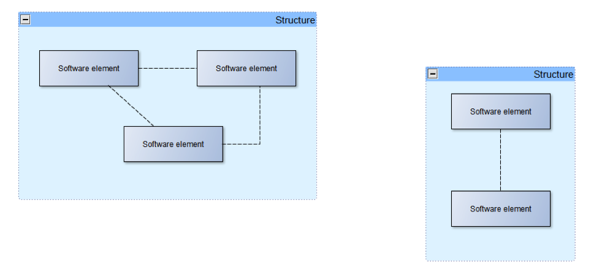

Blogg
Här finns tekniska artiklar, presentationer och nyheter om arkitektur och systemutveckling. Håll dig uppdaterad, följ oss på Twitter
Här finns tekniska artiklar, presentationer och nyheter om arkitektur och systemutveckling. Håll dig uppdaterad, följ oss på Twitter
I föregående inlägg i den här bloggserien om arkitektur så utlovades ett blogginlägg om olika typer av diagram och hur de kan kategoriseras. Jag kommer att börja med att beskriva några av de vanligaste diagramtyperna över några blogginlägg, för att därefter avsluta med en överblick över UMLs hela omfång och varför man har olika kategorier av diagram.
I arbetet med mjukvaruarkitektur, så är kommunikation oerhört viktigt. Arkitekten behöver kommunicera arkitekturen med omgivningen på ett begripligt och tillräckligt exakt sätt. Den gamla klyschan: ”en bild säger mer än tusen ord” stämmer in bra också på arkitekturarbete.
De bilder en arkitekt kommunicerar via är oftast olika typer av diagram. Det går naturligtvis ibland bra att rita en kladd över tex ett arkitekturmönster lite hursomhelst så länge mottagaren förstår, men det är förstås ännu bättre om arkitekten håller sig till någon form av allmänt accepterad beskrivningsform.
Mao en standard för att beskriva mjukvaruarkitektur!
UML, ”Unified Modelling Language” är en standard för att visuellt och textuellt (formellt är det en s.k. ”notation”) beskriva olika typer av mjukvaruartefakter samt näraliggande företeelser som driver mjukvarans utformning, bla:
Vi skall nu kika lite närmare på några vanligt förekommande UML-diagram som används inom arbetet med att utforma en mjukvaruarkitektur.
I del 2 av bloggserien definierade vi arkitektur på följande sätt:

”The software architecture of a system is the set of structures needed to reason about the system, which comprise software elements, relations among them, and properties of both”
Det följer då naturligtvis, helt logiskt, att arkitekten behöver ha åtminstone några slags diagram för att beskriva mjukvarustrukturer!
UML specificerar många olika diagram, men klassdiagrammet är ett av de mest grundläggande diagrammen då det används för att beskriva exakt det som definitionen av mjukvaruarkitektur ovan formulerar: hur olika delar av mjukvaran förhåller sig till varandra och vilka egenskaper de olika delarna har.

Klassdiagrammet ovan skulle tex kunna vara början på designen av ett IT-system för att hålla reda på fordon i ett geografiskt område, kanske ett trafikinformationssystem?
Vad kan vi då utläsa av klassdiagrammet? Jo, att IT-systemet skall hålla reda på ”Fordon” som alla ”befinner sig på” en ”Position”, samt att ”Buss” och ”Lastbil” är en slags ”Fordon”.
Låt oss gå igenom de olika delarna i diagrammet mer i detalj:

Klassen ”Lastbil” beskriver hur vårt IT-system skall representera lastbilar. Man kan tänka på en klass som en ”behållare” som håller ihop två olika slags egenskaper för i detta fall lastbilar:
Informationen om en lastbil representeras i vårt IT-system av attributet ”lastVikt”. Attributet ”lastvikt” skulle tex kunna representera vilken vikt lasten har för en viss lastbil vid ett givet ögonblick i IT-systemet. Låt oss titta närmare på attributets specifikation:
Hur ska man då komma åt informationen om vikten på lastbilens last, tex om en användare vill uppdatera lastbilens aktuella lastvikt i IT-systemet? Det är här klassens beteende kommer in i bilden: Klassen ”Lastbil” innehåller bla metoden ”ändraLastvikt”. Metoden beskriver hur man går tillväga (eller beteendet som krävs) för att ändra på värdet på lastbilens attribut ”lastVikt”. Låt oss titta närmare på metodens specifikation:
Klasser kan förhålla sig till varandra på flera olika typer av sätt, i detta blogginlägg kommer vi dock bara titta närmare på de allra vanligaste.
Ett grundläggande förhållande är att klasser helt enkelt känner till varandra ”i största allmänhet”: detta förhållande kallas för ”association” helt enkelt därför att klasserna är associerade med varandra!
Låt oss titta närmare på den enda associationen i vårt klassdiagram ovan: den mellan klassen ”Fordon” och klassen ”Position”:
det finns en association mellan ”Fordon” och ”Position” de är mao inte oberoende av varandra
associationen är en pil som utgår från ”Fordon” och pekar på ”Position”, det betyder att ”Fordon” kan ta reda på sin ”Position”, klassen ”Position” däremot kan inte ta reda på vilket ”Fordon” denna utgör ”Position” för (pilen är inte dubbelriktad)
associationens namn ”befinner sig på” läses i pilens riktning och anger innebörden av associationen
”0..*” talar om multipliciteten för ”Fordon” i associationen med ”Position”: en ”Position” kan innehålla noll, ett eller flera ”Fordon” (not: fordon kan befinna sig på samma position när de är på olika höjd, tex i en planskild korsning)
”1” talar om multipliciteten för ”Position” i associationen med ”Fordon”: ett ”Fordon” har en och endast en ”Position” i varje givet ögonblick
Ett annat vanligt förhållande mellan klasser är att en generell klass samlar egenskaper (beteende och/eller information) som sedan ärvs av klasser som är specialiseringar av den generella klassen. I vårt diagram är ”Fordon” en generell klass som samlar egenskaper som alla slags fordon skall kunna ha i IT-systemet:
Klassen ”Buss” är en specialisering av klassen ”Fordon” eller annorlunda uttryckt: en ”Buss” är ett slags ”Fordon”. Detta betyder i vårt IT-system att alla egenskaper som ”Fordon” har, har också ”Buss”, man kan säga att ”Buss” har ärvt ”Fordon”s egenskaper!
Utöver de ärvda egenskaperna, så innehåller klassen ”Buss” även sina egna specialiserade egenskaper som är unika för klassen ”Buss”:
På samma sätt ”ärver” klassen ”Lastbil” samtliga egenskaper från ”Fordon” och har också sina egna unika egenskaper, precis som klassen ”Buss”.
En viktig sak att förstå är också skillnaden mellan en klass och dess instanser (not: begreppet objekt är också vanligt). I klassdiagrammen ovan har vi beskrivit olika mjukvarukomponenter som klasser. Ett sätt att se på klasser är, som tidigare nämnts, som behållare för beteende och information (egenskaper) som naturligt hör ihop.
Vi kan också se på en klass som en mall (eller specifikation) för dess instanser eller förenklat som en stämpel med vars hjälp man ”stämplar fram” instanser i IT-systemet.
Vad är då en instans? En instans är en representation i IT-systemet av en viss förekomst av en klass eller i verkligheten en specifik lastbil eller buss:

I diagrammet ovan ser vi nu tydligt hur klasserna ”Lastbil” (och därmed indirekt också ”Fordon”) samt ”Position” har använts för att ”stämpla fram” unika instanser eller objekt med faktiska värden på alla attribut!
Det vi också har fått ovan är ett s.k. UML-”Objektdiagram”, man kan se objektdiagrammet som ett klassdiagram specificerat vid ett visst ögonblick i tid och rum.
Vi kommer inte fördjupa oss i objektdiagram i detta bloggavsnitt, men för den intresserade är Wikipedia alltid en bra början.
Klassdiagrammet används för att beskriva många olika företeelser inom mjukvaruutveckling i allmänhet och arkitektur i synnerhet:
För den som inte kan vänta på nästa blogginlägg, utan redan nu vill fördjupa sig ytterligare i UML, så rekommenderas boken ”UML Distilled” av Martin Fowler.
Martin Fowler har skrivit mängder av böcker kring systemutveckling i allmänhet och arkitektur i synnerhet och jag rekommenderar den som är intresserad av området att botanisera på Martin Fowlers hemsida.
I nästa blogginlägg kommer vi kika närmare på sekvensdiagram och hur dessa kan användas.